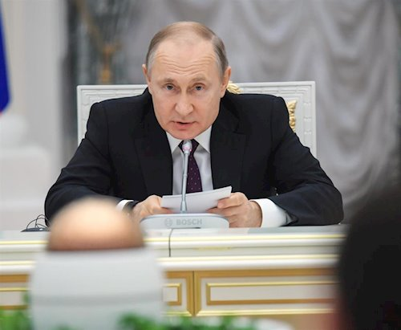

Vladímir Putin
“Entiendo que asumí una enorme responsabilidad, y en Rusia, el jefe de Estado siempre ha sido y será la persona que es responsable de todo lo que sucede en el país”.
El presidente sabe la gran tarea que conlleva su cargo y no lo esconde
Político ruso, actual presidente de la Federación Rusa desde 2012, cargo que había ya ejercido en dos mandatos anteriores (2000-2004 y 2004-2008).
En 1975 comenzó su vida profesional en la dirección de la inteligencia exterior del Comité de Seguridad del Estado (KGB), en la antigua URSS, donde alcanzó el rango de teniente general. Según su currículum, trabajó en Alemania durante la década de los 70, pero también se ha especulado, después de ser nombrado jefe del Servicio Federal de Seguridad (SFS), que pertenecía a los servicios de disidencia interna, el Quinto Directorio del KGB.
Después de la caída del Muro de Berlín y el desmoronamiento de la URSS, Vladímir Putin empezó a ocuparse de temas de política municipal en su ciudad natal, en el periodo en el que era alcalde de Leningrado Anatoli Sobchak, considerado muy liberal y con una enorme popularidad entonces.
En julio de 1998 fue nombrado director del Servicio Federal de Seguridad (SFS), la más importante de las cuatro ramas en que se dividió el KGB y heredera de las funciones de policía política. A partir de marzo de 1999 Putin compartió este cargo con el de secretario del Consejo de Seguridad.
El 19 de diciembre de 1999, Putin ganó las elecciones legislativas celebradas en Rusia. Pero el verdadero golpe de mano de este hombre fuerte del Kremlin estaba por venir. El 31 de diciembre de 1999, Boris Yeltsin presentó su dimisión como presidente de Rusia durante el discurso de fin de año a la nación, y Putin, nombrado por el presidente dimisionario Boris Yeltsin como su favorito para la sucesión en el Kremlin, asumió en funciones la jefatura del Estado y las Fuerzas Armadas.
El nuevo presidente de Rusia afirmó ese mismo día ante las cámaras de la televisión rusa lo siguiente: "Hoy se me han asignado las funciones de jefe de Estado. Quiero subrayar que ni por un minuto en el país ha habido ni habrá un vacío de poder y las autoridades cortarán de raíz cualquier intento de quebrantar la legislación y la Constitución de Rusia". En marzo de 2000 legitimó su poder en las urnas y en 2004 logró la reelección. Tras el periodo presidencial de Dmitri Medvédev (2008-2012), estrecho colaborador suyo, Putin fue reelegido para un tercer mandato (2012-2018).
Vladímir Putin ha sido reacio a mostrarse en público y a conceder entrevistas, lo que, unido a su pasado como espía de la KGB, hace que se conozca poco sobre él. Con dosis en gran parte contradictorias de defensa de la democracia y las libertades, autoritarismo evidente, apoyo a la economía de mercado y a la economía dirigida y exaltación de los valores nacionalistas y militares, el presdiente ruso ha logrado mantener su popularidad a lo largo de sus sucesivos mandatos entre gran parte de la población.